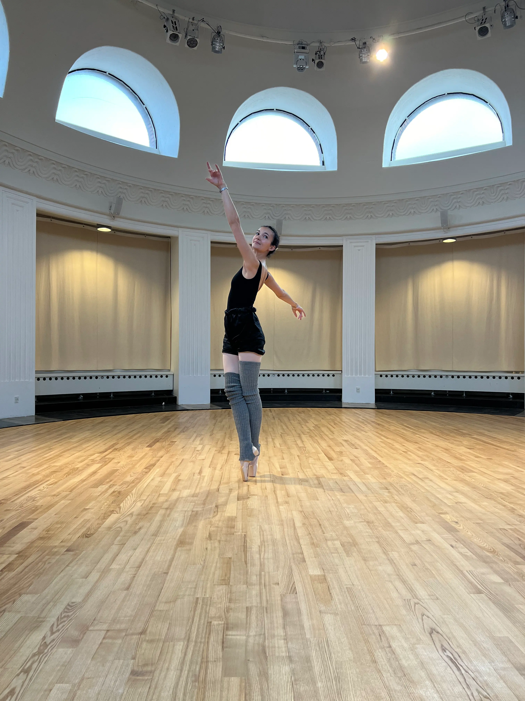
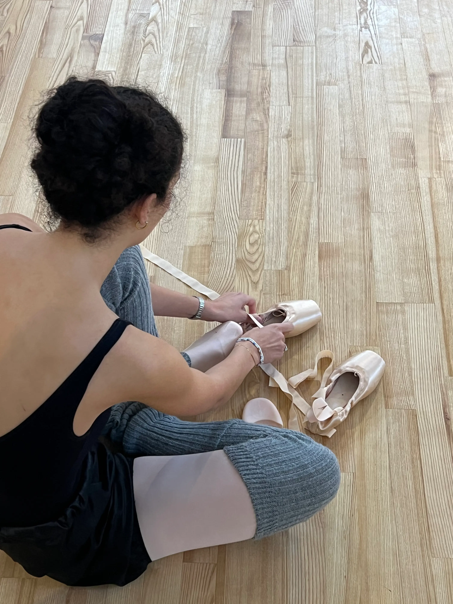

En passion for dans
Tema 5 handlede om indholdsproduktion og vi skulle derfor blandt andet lære at interviewe, filme og klippe i Adobe after effects. Vi startede ud med at skulle lave et passionssite, hvor vi i grupper skulle finde en person med en passion at interviewe til en 1 minuts video. Min makker Julie og jeg valgte min veninde Cæcilia, der er professionel danser. Vi planlagde interviewet hjemmefra og lavede en skudliste, så vi var klar til at tage ud og filme en masse flotte klip af hende der dansede og lave et kort interview.



Efterfølgende skulle vi hver især redigere en version af interviewet og kode en hjemmeside ud fra det materiale vi havde fået med hjem. På den hjemmeside skulle vi også gøre brug af lottiefiles, som er animeret vektor grafik. Jeg tegnede min i illustrator og animerede en kort sekvens i after effects.
Den færdige interview video.
Samarbejde og kodning = github
Udover vores passionssite, skulle vi i anden del af temaet også lave et virksomhedssite. Her skulle vi i større grupper re designe en selvvalgt virksomheds hjemmeside. Vi startede med at udfylde en gruppekontrakt for at forventningsafstemme
vores mål og samarbejde i gruppen. Derudover skulle vi lære at bruge gitHub, som er en hjemmeside, hvor man kan dele og arbejde sammen om sine kodeprojekter.
Vi valgte virksomheden Elius, som upcycler brugte kølecontainere og omdanner dem til specialiserede vækst- og drivhuse. Vi interviewede, lavede moodboard, styletile, wireframes, prototype og forskellige tests for til sidst at ende med vores
færdige hjemmeside, hvor vi skulle kode en side hver.